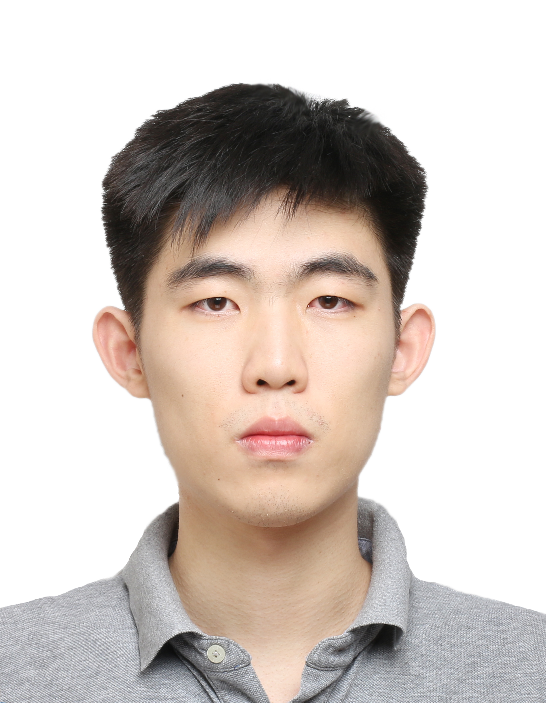
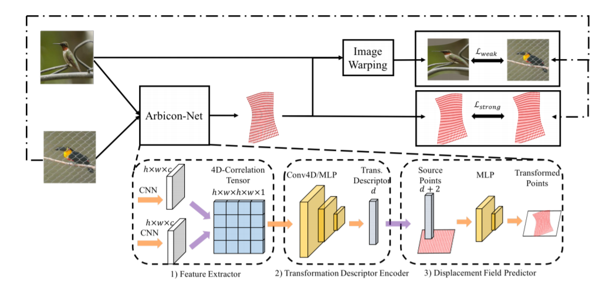
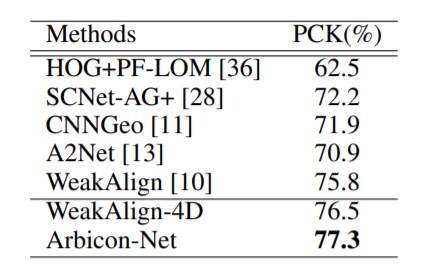
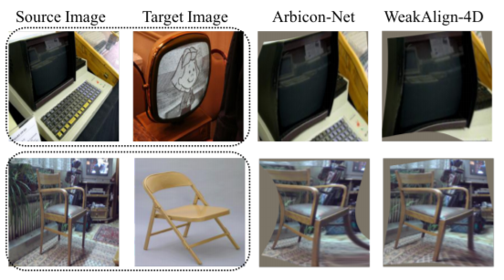

|  |
Jianchun Chen |
| Status: | Undergraduate Student |
| Program: | Computer Science |
| School: | Xiamen University |
| RA Period: | From 2018-06 to 2019-06 |
| I'm a Master student in Computer Science at Carnegie Mellon University. Before that, I was a research assistant in NYU Multimedia and Visual Computing Lab, advised by Professor Yi Fang. I am broadly interested in 3D Computer Vision, Pattern Recognition and Deep Learning. |
This project concerns the undetermined problem of estimating geometric transformation between image pairs. Recent methods introduce deep neural networks to predict the controlling parameters of hand-crafted geometric transformation models (e.g. thin-plate spline) for image registration and matching. However the low-dimension parametric models are incapable of estimating a highly complex geometric transform with limited flexibility to model the actual geometric deformation from image pairs. To address this issue, we present an end-to-end trainable deep neural networks, named Arbitrary Continuous Geometric Transformation Networks (Arbicon-Net), to directly predict the dense displacement field for pairwise image alignment. Arbicon-Net is generalized from training data to predict the desired arbitrary continuous geometric transformation in a data-driven manner for unseen new pair of images. Particularly, without imposing penalization terms, the predicted displacement vector function is proven to be spatially continuous and smooth. To verify the performance of Arbicon-Net, we conducted semantic alignment tests over both synthetic and real image dataset with various experimental settings. The results demonstrate that Arbicon-Net outperforms the previous image alignment techniques in identifying the image correspondences.
Figure 1: Main Pipeline.
In this project, we design a novel Arbicon-Net, which uses deep neural networks to predict dense displacement field to accommodate the arbitrary geometric transformations according to the actual requirement for image registration. This addresses the critical issue that the actual desired geometric transformation does not match with the one that can be provided by pre-defined geometric model. As displayed in Figure.1, Our proposed end-to-end trainable Arbicon-Net has three main components. 1) Geometric Feature Extractor Module; 2) Transformation Descriptor Encoder Module; 3) Displacement Field Predictor Module.
Table 1: Quantitative results on PFPascal dataset with weakly supervise training.
In this section, we carried out a set of tests under different experimental settings to validate the performance of our proposed Arbicon-Net for its capability of estimating the geometric transformation for image dense correspondence in semantic alignment. In our experiment, three image datasets, Pascal VOC dataset, PF-Pascal dataset and Proposal Flow dataset are used to prepare both synthesized and real image dataset for the various tests. Pascal VOC dataset contains 28,952 images. PF-Pascal contains 1351 semantically aligned image pairs from 20 semantic category of Pascal VOC dataset with a 7:3:3 training/validation/testing split. Proposal Flow dataset with 900 image pairs from 5 categories. We randomly split the Proposal Flow dataset into 3 folds for k-fold validation in the test. Table 1 compares PCK scores for Arbicon-Net and baseline models for the test result on PF-Pascal dataset. The comparison result indicates that Arbicon-Net outperforms all baseline methods. To better illustrate the comparison results, we further show two pair images before and after image registration in Figure.2. The first two columns show the source and target images, the third column illustrates the transformed source image by Arbicon-Net and the fourth column illustrates the transformed source image by WeakAlign-4D. As we can see from the Figure, compared to baseline method WeakAlign-4D, Arbicon-Net is able to predict a fine-grained geometric transformation with coherent flow motion and preservation of local geometric structural details.
Figure 2: Qualitative results on PF-Pascal dataset with weakly supervise training.